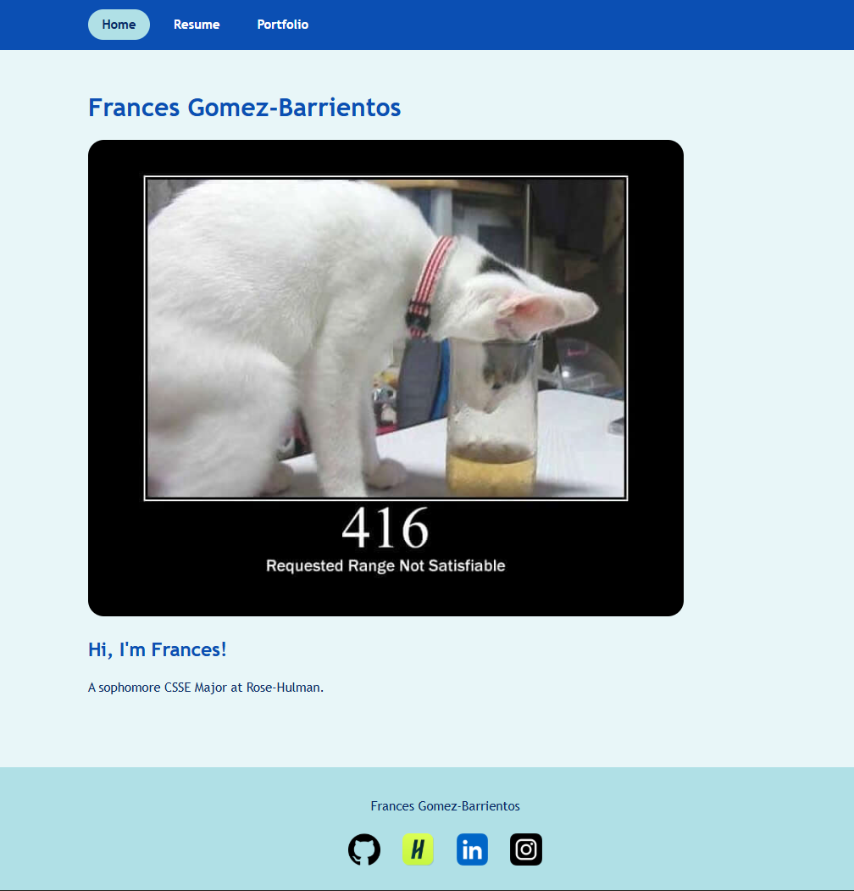
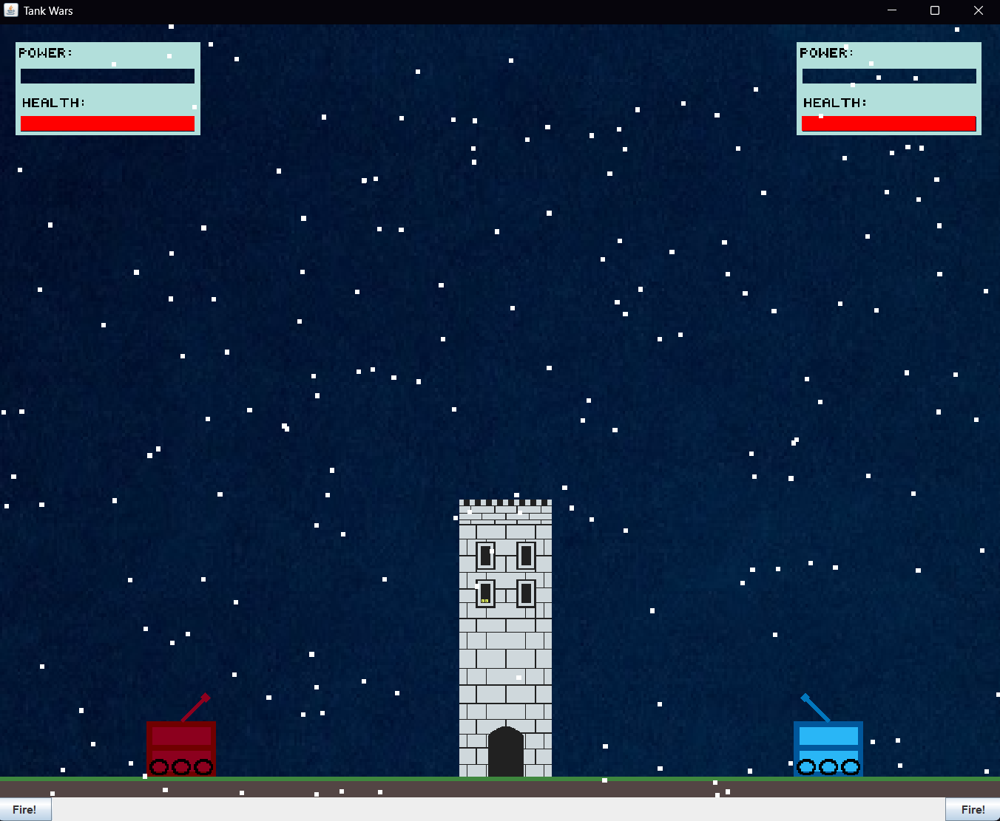

Portfolio
This Portfolio Site

A personal website with a resume and project gallery.
Built with: HTML, CSS, JavaScript
Tank Battle Game

Collaborated with a group to design and build a 2D tank battle game in Java using Swing/AWT for custom rendering, implementing game components, player mechanics, and collision handling across a multi-class architecture.
Built with: Java
Analysis of Chicago Crime Data in Chicago from 2001-2024
No available photo of project
Analyzed Chicago crime data to identify trens, and present findings.
Built with: Python using Pandas, NumPy and Matplotlib